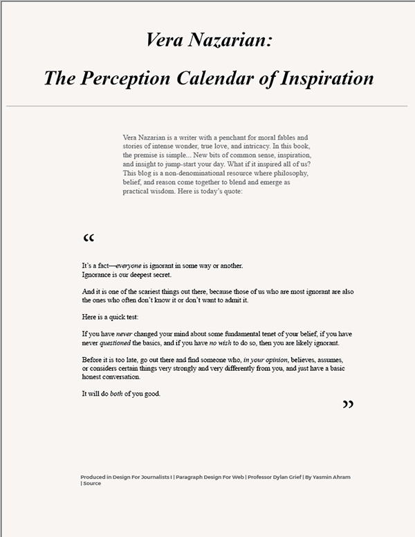

Design For Web
Collect 1 inspiring quote, lay out and design the quote as web page. Quote should have: a header, a lede that introduces the quote, the quote itself, and an attribute. Clearly and elegently apply different styles to different elements if you have good reason to visually distinguish them. At the bottom of the page, include a section with: The name of the assignment, the class name, the instructor name, your name, and the source where you found the quote.
This assignment was really fun as I realized there was a lot of creative freedom (which is a feeling that persisted throughout the semester.) For this quote, I chose a light blush background color for the page to express the power and poise of a literary quote and its context of a moral lesson. For typographic hierarchy, the author's name and book title, which act as the header of the webpage, have the largest typesize and are an italicized serif font. The header is further separated from the rest of the page with a light grey solid border, followed by background information on the quote in the same grey color as to not clash with the importance of the quote, which is in black. The quote is hugged by enlarged quotation marks on either sides of the paragraph as to highlight it, also in a serif font for readability. The credits and byline are grey, bold and sans-serif, as to differentiate from the rest of the text.
Take a look at the web pages your classmates designed and coded for homework last week. Choose THREE of your classmates’ web pages to download and style the each page so that it dramatically contrasts with the original. Change the design. Use Google Fonts. Edit the code. Link the pages to each other. Lay out and design the quote for mobile.
Below are the re-designs. Choose your own adventure.
This was extra fun. In short, in terms of type, color, spacing, layout and general vibe of the web pages, I decided to do the complete opposite of the original design. I allowed myself to experiment with color palettes and type families that were much different than the original, yet allowed the message of the quotes to be further expressed.